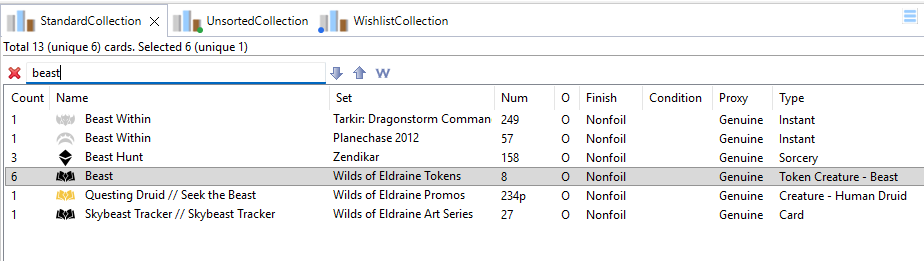
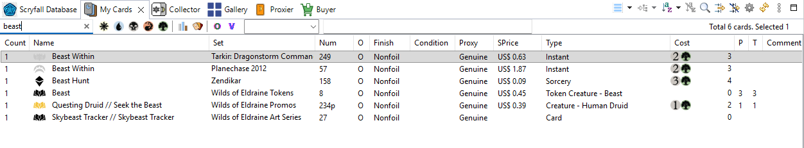
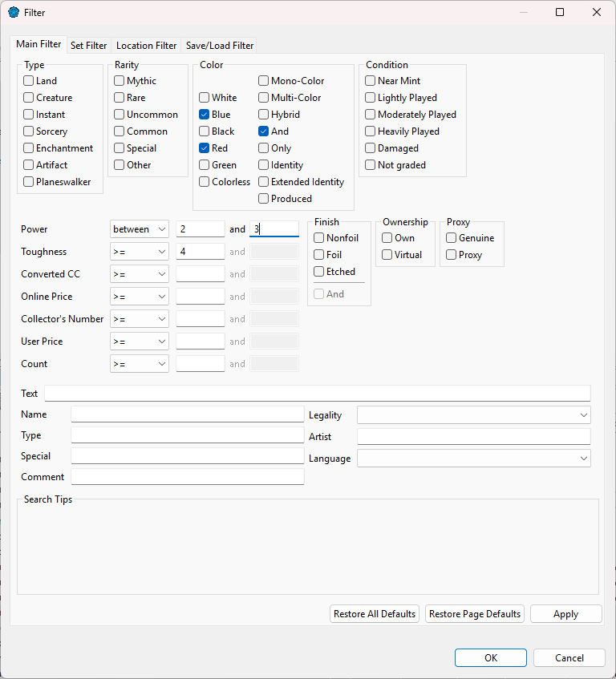
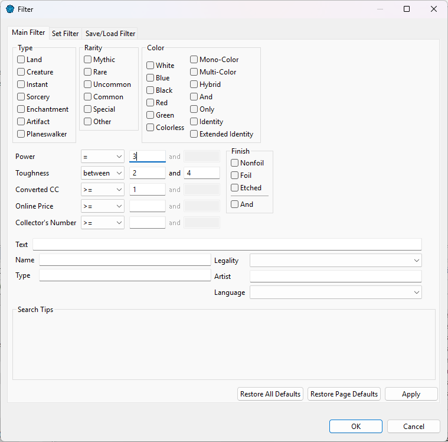
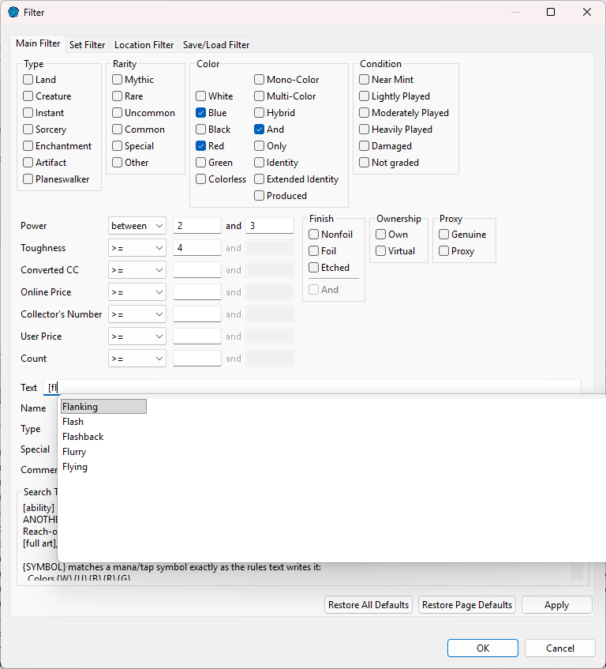
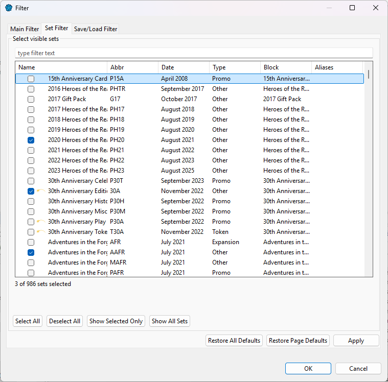

There are three ways to find cards in a list, from the quickest to the most complete:
Click Find... (the magnifier in the view's toolbar). A find bar opens with a search... box: type a name, and ManaDesk selects the first card that matches. Use the up and down arrows (Previous and Next) to go through the others. Find does not hide anything.

* as a wildcard, for example Jace*.The quick filter bar sits above the list. To show or hide it in a view, check or uncheck Show quick filter in that view's page under .

* and ? work).When some cards are hidden by a filter, the list says so. Use Reset Filter to show everything again.
Each deck and collection keeps its own filter, and gets it back the next time you start ManaDesk. The other views (Scryfall Database, My Cards, Collector...) start with no filter. To use a filter again later, save it in the filter dialog's Save/Load Filter tab.
Click Filter... in the view's toolbar, or press Ctrl+6. The dialog has tabs:

>=, =...) or a range (from... to...).

The Search Tips panel at the bottom of the dialog explains the search syntax for the field you are in. It is also in Filter and search syntax.
Choose which sets to show. Type in the box to find a set; the label shows how many sets are selected. Only show the card from the latest set keeps a single printing per card.

Set lists are in alphabetical order. To list them by release date (oldest first) instead, check List sets by release date in .
Only show the cards that are in the decks and collections you check.
Save the current filter under a name, and load it again later.
Use Apply to see the result without closing the dialog, and Restore All Defaults to clear every tab.
See also: Filter and search syntax · Browsing the card database